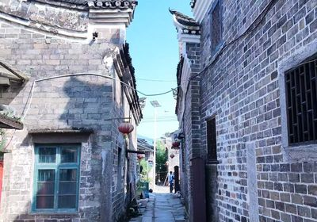
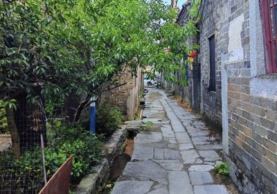
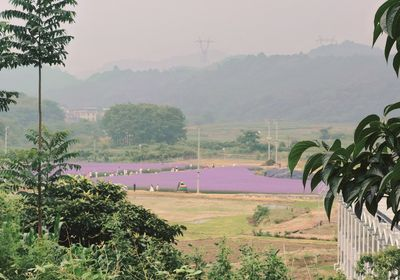

坳上古村位于湖南省郴州市，是一座拥有数百年历史的传统古村落。村落依山而建，保存了大量明清时期的古建筑群，青砖黛瓦、雕梁画栋，展现了湘南地区独特的建筑艺术风格。这里不仅是湖南省历史文化名村，更是多项非物质文化遗产的传承之地，承载着深厚的历史文化底蕴。

保存完好的明清古建筑

蜿蜒曲折的古老巷道

庄严肃穆的家族祠堂
了解坳上古村的最新资讯
为期一个月的坳上古村非遗艺术展在市博物馆隆重开幕，展出多件珍贵的传统手工艺品...
为推动古村非遗文化的传承与发展，我市启动了新一轮的非遗传承人培训计划...